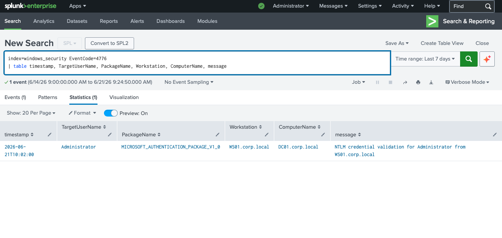
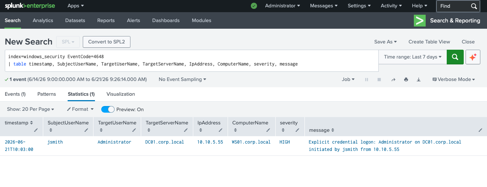
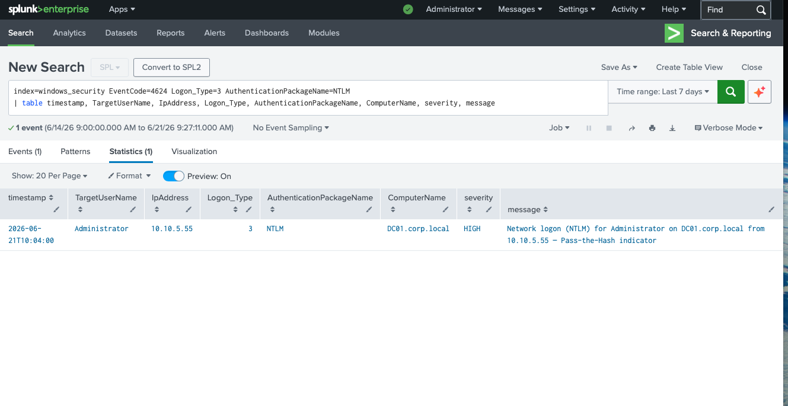
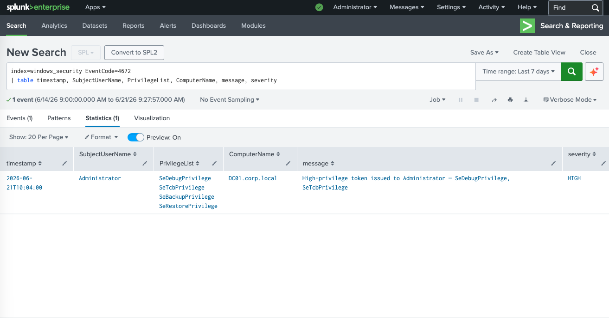

Was ist Pass-the-Hash?
Bei einem Pass-the-Hash (PtH) Angriff stiehlt der Angreifer den NTLM-Hash eines Passworts aus dem Speicher (z.B. via Mimikatz aus lsass.exe) und verwendet diesen Hash direkt zur Authentifizierung — ohne das echte Klartextpasswort zu kennen. Windows akzeptiert den Hash, weil NTLM intern mit dem Hash arbeitet.
Das Ergebnis: Lateral Movement — der Angreifer springt von einem kompromittierten Workstation-Konto auf einen hochprivilegierten Server (hier: den Domain Controller) und erhält vollständige Kontrolle über die Domain.
Erkennungsmerkmal: Kerberos ist das Standardprotokoll in einer Windows-Domain. Taucht NTLM bei einem Netzwerk-Logon (Type 3) auf einen Domain Controller auf — vor allem von einem unbekannten Subnetz — ist das ein starker Pass-the-Hash-Indikator.
Angriffsablauf
Erkannte Event IDs
Analyse — Schritt 1: NTLM-Authentifizierung (4776)
Der erste Indikator: der Domain Controller versucht den NTLM-Hash für das Administrator-Konto zu validieren — ausgelöst von WS01.corp.local. Warum kommt ein Administrator-Login von einer Workstation?

// EventID 4776 — NTLM-Validierung für Administrator von WS01.corp.local auf DC01
Befund: Der DC validiert NTLM-Credentials für Administrator — initiiert von WS01.corp.local. In normalen Abläufen würde ein Administrator sich interaktiv anmelden, nicht per NTLM von einer Workstation aus.
Analyse — Schritt 2: Explicit Credential Logon (4648)
EventID 4648 zeigt: das kompromittierte Konto jsmith meldet sich explizit als Administrator auf DC01 an — von der IP 10.10.5.55, einem unbekannten internen Subnetz.

// EventID 4648 — jsmith loggt sich als Administrator auf DC01 ein — von 10.10.5.55 — Severity: HIGH
Kritischer Befund: jsmith (normaler Benutzer) meldet sich als Administrator auf dem Domain Controller an. Das ist in keinem legitimen Szenario erklärbar — klares Zeichen für einen kompromittierten Hash.
Analyse — Schritt 3: Network Logon Type 3 mit NTLM (4624)
Der entscheidende Beweis: Ein erfolgreicher Netzwerk-Logon (Type 3) auf den Domain Controller — aber mit NTLM statt Kerberos. In einer richtig konfigurierten Windows-Domain sollte kein DC-Login mit NTLM erfolgen.

// EventID 4624 · Type 3 · NTLM — Administrator auf DC01 von 10.10.5.55 — Severity: HIGH
Pass-the-Hash bestätigt: Die Kombination aus Logon Type 3 + NTLM + unbekannte IP (10.10.5.55) + Administrator auf DC ist das klassische Vier-Indikator-Muster eines PtH-Angriffs. Kerberos wäre der normale Weg — NTLM hier ist ein Alarmsignal.
Analyse — Schritt 4: Hochprivilegiertes Token (4672)
Nach dem erfolgreichen Logon wird dem Administrator-Konto ein hochprivilegiertes Token zugewiesen. SeDebugPrivilege erlaubt das Lesen und Schreiben von Prozessen anderer Benutzer — genau das, was Mimikatz zum Auslesen von lsass.exe benötigt.

// EventID 4672 — Administrator erhält SeDebugPrivilege + SeTcbPrivilege auf DC01 — Severity: HIGH
SeDebugPrivilege + SeTcbPrivilege: Mit diesen Rechten kann der Angreifer jeden Prozess lesen (inkl. lsass.exe), als SYSTEM agieren und die gesamte Domain übernehmen. Das ist der Endpunkt der Lateral Movement Kill Chain.